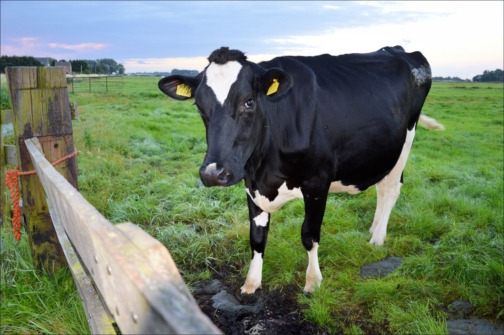

Býložravci
- Býložravec (herbivor) je živočich, který pojídá pouze či téměř výhradně rostliny nebo části rostlin. Býložravost se odborně nazývá herbivorie. Ve srovnání s masožravci mají býložravci zpravidla delší a složitější trávicí soustavu, v níž zpravidla žije značné množství symbiontů napomáhajících trávení celulózy (některé druhy bakterií a kvasinek).
- Býložravci jsou v ekologické terminologii označováni jako konzumenti 1. řádu.

Způsob výživy
- spásání
- okus specifických částí rostliny
- minování (vyžírání chodbiček)
- sání tekutin z rostlinných tkání.
Způsob rostlinné obrany proti býložravcům
- Rostliny se snaží o vytvoření obranných mechanismů. Vysvětlení lze nalézt v evolučním principu zvaném efekt červené královny.
- Jestliže je v rámci evoluce určitá rostlina požírána některým živočišným druhem, snaží se přežít. Začne např. vytvářet trny.
- Avšak živočich požírající danou rostlinu se začne tomuto obrannému mechanismu rostliny (trnům) také přizpůsobovat a překážku překoná.
Více informací o býložravcích naleznete na této stránce.